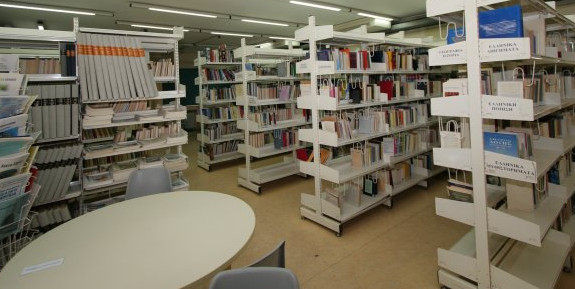
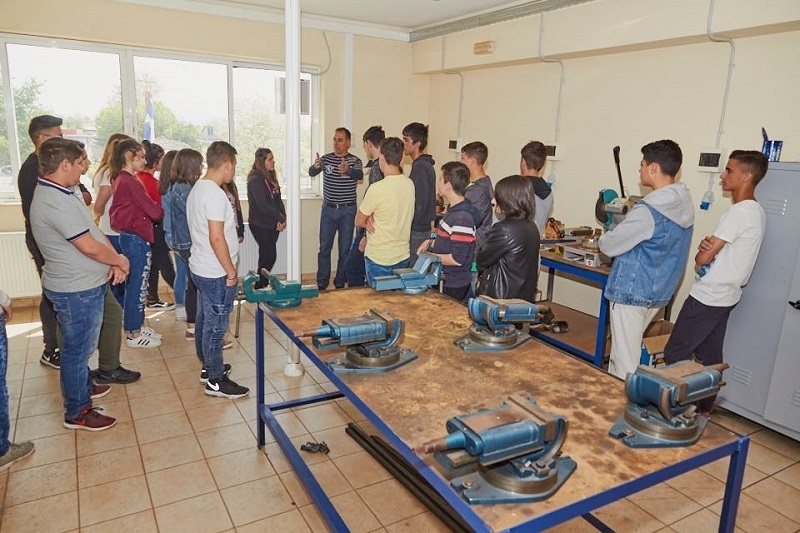

ΣΧΟΛΕΙΑ
Νέα σχολεία και αναβαθμισμένες υποδομές
Νέα έργα και παρεμβάσεις στις σχολικές υποδομές παρουσιάστηκαν στο Ηράκλειο, με στόχο καλύτερες συνθήκες μάθησης και περισσότερες ευκαιρίες για τους μαθητές.
Διάβασε περισσότερα →ΕΚΠΑΙΔΕΥΤΙΚΑ ΝΕΑ
Νέα, ευκαιρίες και εξελίξεις που αφορούν μαθητές, φοιτητές, εκπαιδευτικούς και ολόκληρη την εκπαιδευτική κοινότητα.

ΚΥΡΙΟ ΘΕΜΑ
Το Υπουργείο Παιδείας ανακοίνωσε το πρόγραμμα των Πανελλαδικών Εξετάσεων του 2027. Οι εξετάσεις για τα ΓΕΛ ξεκινούν στις 28 Μαΐου, ενώ για τα ΕΠΑΛ στις 29 Μαΐου.
Διάβασε περισσότεραΤΕΛΕΥΤΑΙΑ ΝΕΑ
ΣΧΟΛΕΙΑ
Νέα έργα και παρεμβάσεις στις σχολικές υποδομές παρουσιάστηκαν στο Ηράκλειο, με στόχο καλύτερες συνθήκες μάθησης και περισσότερες ευκαιρίες για τους μαθητές.
Διάβασε περισσότερα →
ΠΑΝΕΛΛΑΔΙΚΕΣ
Το Υπουργείο Παιδείας ανακοίνωσε το πρόγραμμα των Πανελλαδικών Εξετάσεων του 2027. Οι εξετάσεις για τα ΓΕΛ ξεκινούν στις 28 Μαΐου, ενώ για τα ΕΠΑΛ στις 29 Μαΐου.
Διάβασε περισσότερα →ΠΑΝΕΠΙΣΤΗΜΙΑ
Από τις 11 έως τις 25 Σεπτεμβρίου πραγματοποιούνται οι εγγραφές των επιτυχόντων της ειδικής κατηγορίας αλλοδαπών και αλλογενών στα ελληνικά πανεπιστήμια.
Διάβασε περισσότερα →
ΣΧΟΛΙΚΟΣ ΑΘΛΗΤΙΣΜΟΣ
Η 13η Πανελλήνια και Ευρωπαϊκή Ημέρα Σχολικού Αθλητισμού θα πραγματοποιηθεί στις 25 Σεπτεμβρίου, με αθλητικές δράσεις και δραστηριότητες για μαθητές.
Διάβασε περισσότερα →
ΧΡΗΜΑΤΟΔΟΤΗΣΗ
Χρηματοδότηση 56,21 εκατ. ευρώ από το ΕΣΠΑ προβλέπεται για την ανάπτυξη και αναβάθμιση σχολικών βιβλιοθηκών σε όλη τη χώρα.
Διάβασε περισσότερα →ΣΧΟΛΕΙΑ
Η νέα σχολική χρονιά φέρνει αλλαγές στη λειτουργία των σχολείων, στα προγράμματα σπουδών, στις υποδομές και στα ψηφιακά εργαλεία.
Διάβασε περισσότερα →
ΕΚΠΑΙΔΕΥΤΙΚΗ ΠΟΛΙΤΙΚΗ
Τα αποτελέσματα της διεθνούς έρευνας PISA 2025 παρουσιάστηκαν στις 8 Σεπτεμβρίου, με τις επιδόσεις των μαθητών σε Μαθηματικά, κατανόηση κειμένου και Φυσικές Επιστήμες στο επίκεντρο.
Διάβασε περισσότερα →
ΕΠΑΓΓΕΛΜΑΤΙΚΗ ΕΚΠΑΙΔΕΥΣΗ
Η διαδικασία για το Μεταλυκειακό Έτος – Τάξη Μαθητείας 2026–2027 συνδέει την επαγγελματική εκπαίδευση με την πρακτική εμπειρία και την αγορά εργασίας.
Διάβασε περισσότερα →ΣΧΟΛΕΙΑ
Συμπληρωματικές εξετάσεις πραγματοποιήθηκαν για την κάλυψη κενών θέσεων στα Δημόσια Ωνάσεια Σχολεία για το σχολικό έτος 2026–2027.
Διάβασε περισσότερα →ΕΚΠΑΙΔΕΥΤΙΚΟΙ
Προσλήφθηκαν 142 εκπαιδευτικοί Δευτεροβάθμιας Εκπαίδευσης για το σχολικό έτος 2026–2027 στα Δημόσια Ωνάσεια Σχολεία.
Διάβασε περισσότερα →ΠΑΝΕΠΙΣΤΗΜΙΑ
Το Δημοκρίτειο Πανεπιστήμιο Θράκης σχεδιάζει δύο νέες φοιτητικές εστίες, με συνολικά 700 θέσεις σε Κομοτηνή και Αλεξανδρούπολη.
Διάβασε περισσότερα →ΕΚΠΑΙΔΕΥΤΙΚΟΙ
Το Υπουργείο Παιδείας ανακοίνωσε 5.487 νέους μόνιμους διορισμούς εκπαιδευτικών και μελών ΕΕΠ-ΕΒΠ για το σχολικό έτος 2026–2027.
Διάβασε περισσότερα →Αν γνωρίζεις μια σημαντική εκπαιδευτική είδηση, ένα πρόγραμμα, έναν διαγωνισμό ή μια ευκαιρία που αξίζει να μάθουν περισσότεροι νέοι, μπορείς να επικοινωνήσεις μαζί μας.
Επικοινώνησε μαζί μας